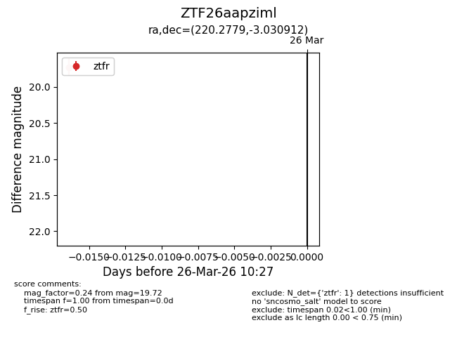
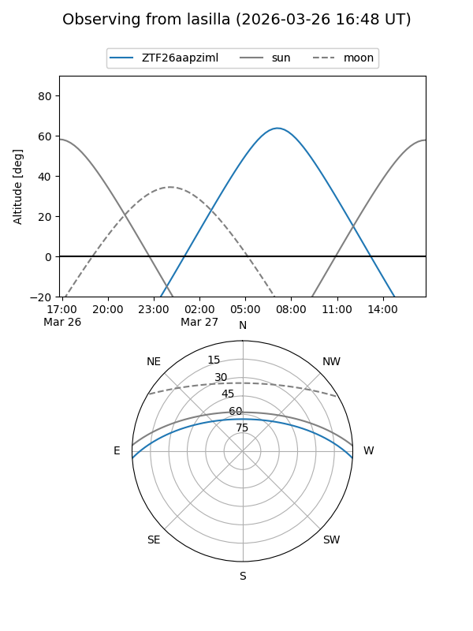
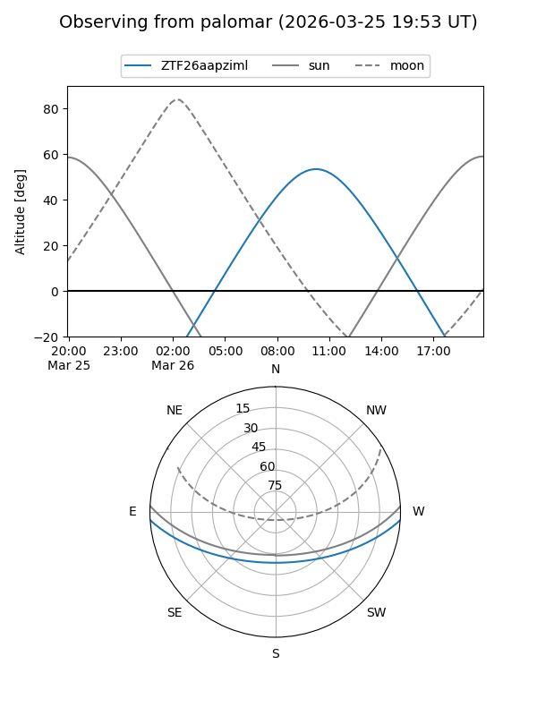

ZTF26aapziml
Target ZTF26aapziml at 2026-03-26 10:29
Aliases and brokers:
FINK: link
Lasair: link
ALeRCE: link
alt names
ZTF26aapziml (ztf,fink_ztf)
Coordinates:
equatorial (ra, dec) = 220.2779,-3.03091
equatorial (HMS+DMS) = 14:41:06.70,-03:01:51.28
galactic (l, b) = (348.4720,+49.88904)
Flags:
Photometry:
last ztfr=19.72
1 ztfr detections
Lightcurve

Visibility


Additional plots